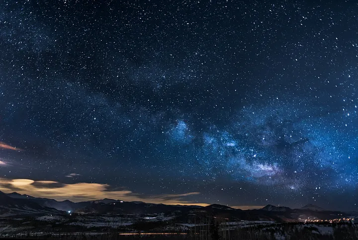
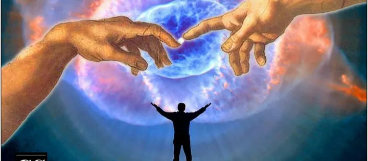
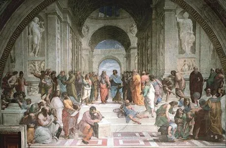
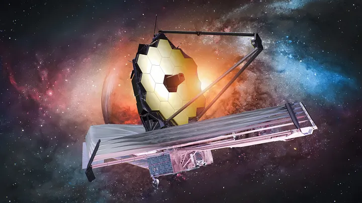
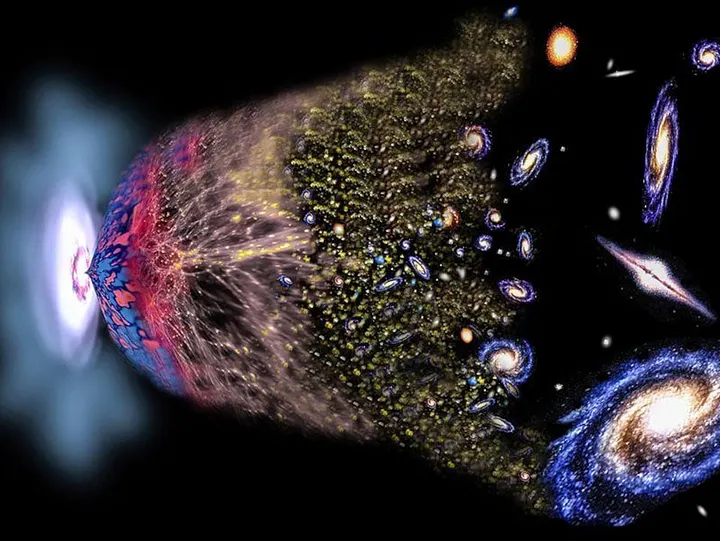

Since the dawn of humanity, one question has persisted, silent yet omnipresent: how did it all begin? This question transcends cultures, religions, and eras. It is universal.
Whether we look at the sky from a desert, a mountain, or a city, the feeling is the same: we are confronted with something immense, almost incomprehensible. And yet, we seek to understand.
Today, thanks to science, we have theories, models, and observations. But the more we advance, the more one reality becomes clear: understanding the origin of the universe also means confronting our own limitations.

Before equations, before telescopes, even before philosophy, there was night.
Night is not simply the absence of light. It is a space for observation, contemplation, and above all, questioning. It was by gazing at the stars that the first humans began to reflect on their place in the world.
Without artificial light, the sky becomes a living map:
- thousands of visible stars
- constellations that tell stories
- a depth that seems infinite
Faced with this spectacle, an intuition arises: it all must have started somewhere.
Night is therefore much more than a backdrop. It is the starting point of cosmic thought.

God and the world’s first explanations
Before the advent of the scientific method, answers came from beliefs. In many civilizations, the universe is not an accident. It is the product of will:
- a creator god
- multiple deities
- a superior organizing force
These narratives have one thing in common: they give meaning to existence. The universe is not simply “there,” it is willed.
Even today, the question of God remains linked to that of the beginning. Some believe that:
- God is the origin of the Big Bang
- the laws of physics themselves could be “created”
- Science and faith are not opposed, but complementary
Others, on the contrary, believe that the universe can be explained without divine intervention. The debate remains open, and probably unresolved.

A philosophy: understanding without observing
Long before modern instruments, thinkers attempted to answer these questions solely through reflection. The philosopher Immanuel Kant questioned the origin of the universe in a radical way. He explained that some questions are beyond our capacity for understanding.
For example:
- Did the universe have a beginning?
- Or has it always existed?
According to Kant, both hypotheses are impossible to prove... but also impossible to refute.
This reveals something fundamental:
our brain, however powerful, may not be capable of grasping the absolute origin of everything.
Philosophy does not provide definitive answers, but it does show the limits of reason.

Telescopes: seeing what the eye cannot
Over time, humanity stopped merely thinking about the universe. It began to observe it.
Figures like Galileo Galilei revolutionized our understanding of the cosmos. Thanks to the first telescopes, they discovered that:
- the Earth is not at the center of everything
- other celestial bodies exist and move
- the universe is far vaster than previously imagined
This revolution marked a turning point: truth no longer rested solely on beliefs or reasoning, but on observation. Today, instruments like the James Webb Space Telescope allow us to go even further. They observe galaxies so distant that their light has taken billions of years to reach us. Observing distant places means observing the past.

The Big Bang: the dominant theory
Modern science offers a clear, if incomplete, answer: the universe began with the Big Bang.
According to this theory:
- about 13.8 billion years ago
- all matter and energy were contracted
- rapid expansion gave birth to the universe
It wasn’t an explosion in space.
Space itself expanded.
Evidence supports this theory:- the cosmic microwave background radiation
- the distribution of galaxies
- the abundance of light elements
The Big Bang is currently the most robust model we have. But it doesn't explain everything.
The biggest mystery: before the start
The real question may not be “how did the universe begin,” but rather: what was there before?
And here, everything becomes unclear.
Several hypotheses exist:
- the universe is cyclic, with endless expansions and contractions
- there are multiple universes, each with its own beginning
- time itself may have started with the Big Bang
or an external cause, which some associate with God
The problem is simple: our current physical laws no longer apply when we go back to the very beginning.
It’s like trying to see before time itself.
Conclusion: between knowledge and ignorance
Humanity has traveled an immense path:
- from myths to science
- from contemplation to observation
- from philosophy to physics
And yet, the question remains: how did it all begin?
Perhaps the origin of the universe is understandable. Perhaps it is not.
What is certain is that the quest for understanding continues. Each discovery opens new questions, and each answer deepens the mystery.
In the end, the question of the beginning is not just a scientific or philosophical problem. It is a reflection of our own curiosity, our desire to understand our place in the cosmos, and our eternal search for meaning.